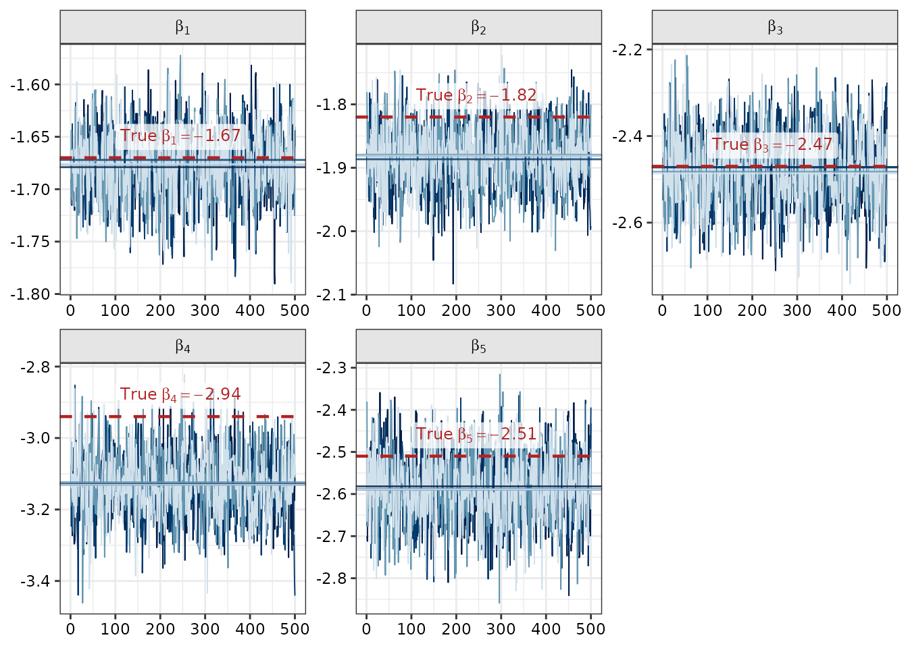
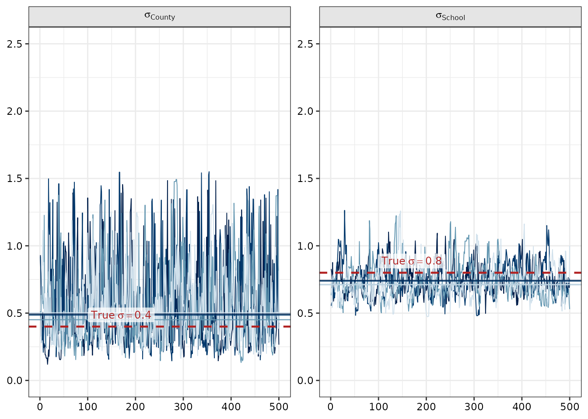
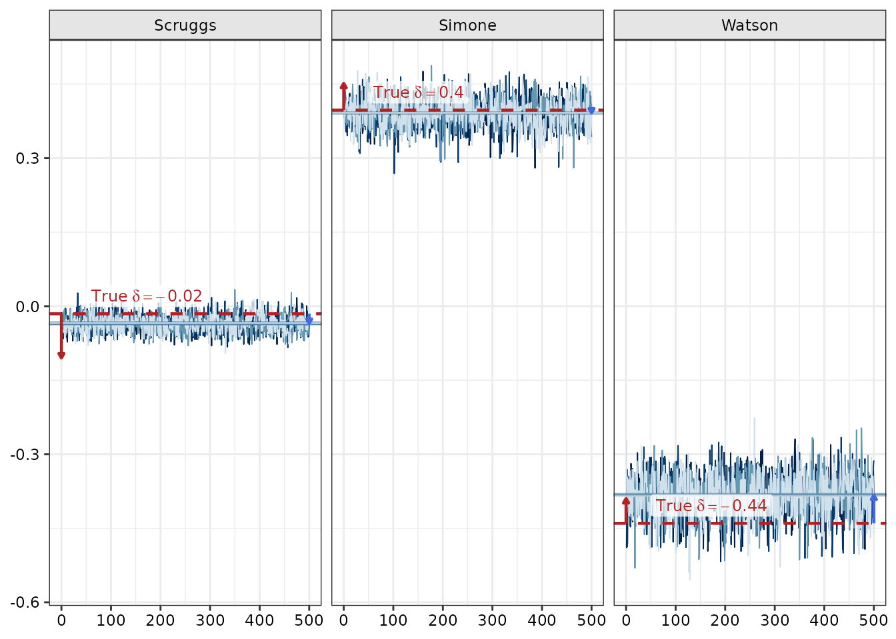
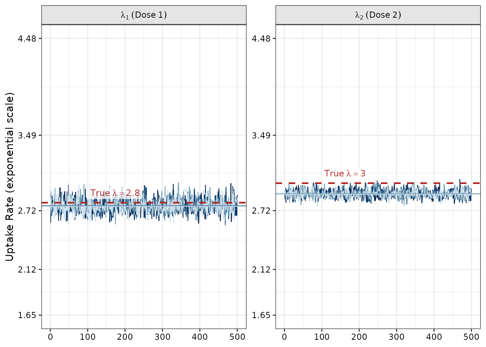

Introduction
Because imuGAP estimates an underlying process model for
vaccination (including baseline uptake splines
,
force-of-vaccination rates
,
and hierarchical location offsets
)
via Bayesian inference in Stan, evaluating a model fit entails assessing
whether MCMC chains converged without pathologies. Ideally, you would
also synthesize data in a way you think is representative of your system
and attempt to recover the latent process parameters. The example data
in the package demonstrates that workflow.
This vignette demonstrates how to:
- Load and extract posterior parameter draws from an
imugap_fitobject usingextract_imugap(). - Inspect parameter trace plots across multiple chains.
- Compare posterior parameter estimates against true data-generating
simulation values (
latent_params_sim). - Evaluate spatial variance components () and location-specific random offsets ().
1. Loading the Model Fit and Extracting Parameters
You can load the bundled fit_sim object, which wraps the
underlying Stan model fit along with dataset and options metadata:
data("fit_sim", package = "imuGAP")
data("latent_params_sim", package = "imuGAP")
data("locations_sim", package = "imuGAP")
data("observations_sim", package = "imuGAP")
fit_sim
#> An imuGAP model fit (`imugap_fit`):
#> Hierarchy: 28 locations across 3 layers (root: 'State')
#> Observations: 841 total (775 uncensored, 66 right-censored)
#>
#> Inference for Stan model: impute_school_coverage_process_v6.
#> 4 chains, each with iter=1000; warmup=500; thin=1;
#> post-warmup draws per chain=500, total post-warmup draws=2000.
#>
#> mean se_mean sd 2.5% 25% 50% 75%
#> beta_bs[1] -1.68 0.00 0.03 -1.74 -1.70 -1.68 -1.65
#> beta_bs[2] -1.88 0.00 0.05 -1.98 -1.91 -1.88 -1.85
#> beta_bs[3] -2.48 0.00 0.08 -2.65 -2.53 -2.48 -2.42
#> beta_bs[4] -3.13 0.00 0.09 -3.30 -3.19 -3.13 -3.07
#> beta_bs[5] -2.59 0.00 0.08 -2.75 -2.64 -2.59 -2.53
#> sigma_layer[1] 0.56 0.01 0.30 0.19 0.33 0.48 0.72
#> sigma_layer[2] 0.74 0.01 0.12 0.55 0.66 0.73 0.81
#> lambda_raw[1] 1.02 0.00 0.03 0.97 1.00 1.02 1.04
#> lambda_raw[2] 1.06 0.00 0.01 1.03 1.05 1.06 1.07
#> lp__ -78864.85 0.28 5.07 -78875.23 -78868.18 -78864.55 -78861.15
#> 97.5% n_eff Rhat
#> beta_bs[1] -1.61 1194 1.00
#> beta_bs[2] -1.79 1095 1.00
#> beta_bs[3] -2.31 994 1.00
#> beta_bs[4] -2.96 1010 1.00
#> beta_bs[5] -2.43 1403 1.00
#> sigma_layer[1] 1.34 656 1.00
#> sigma_layer[2] 1.03 286 1.01
#> lambda_raw[1] 1.07 1198 1.00
#> lambda_raw[2] 1.09 936 1.00
#> lp__ -78856.26 330 1.00
#>
#> Samples were drawn using NUTS(diag_e) at Wed Sep 23 01:08:11 2026.
#> For each parameter, n_eff is a crude measure of effective sample size,
#> and Rhat is the potential scale reduction factor on split chains (at
#> convergence, Rhat=1).To extract posterior draws for specific model parameters, use
extract_imugap():
# Extract B-spline basis coefficients
beta_draws <- extract_imugap(fit_sim, pars = "beta_bs")
str(beta_draws)
#> List of 1
#> $ beta_bs: num [1:2000, 1:5] -1.64 -1.66 -1.67 -1.72 -1.72 ...
#> ..- attr(*, "dimnames")=List of 2
#> .. ..$ iterations: NULL
#> .. ..$ : NULL
# Extract unconstrained force of vaccination rate parameters
lambda_draws <- extract_imugap(fit_sim, pars = "lambda_raw")
str(lambda_draws)
#> List of 1
#> $ lambda_raw: num [1:2000, 1:2] 1.065 0.999 0.993 1.002 0.969 ...
#> ..- attr(*, "dimnames")=List of 2
#> .. ..$ iterations: NULL
#> .. ..$ : NULL2. Visual Diagnostics with bayesplot and Parameter
Recovery
State-Level Cohort Uptake: Basis Spline Coefficients ()
The state-level baseline propensity curve is parameterized as a B-spline over birth cohorts with coefficients . The following trace plots show parameter draws across all 4 MCMC chains alongside within-chain medians and the true simulation parameters (dashed red lines):
Show plot code
beta_pars <- paste0("beta_bs[", seq_along(latent_params_sim$beta_bs), "]")
beta_arr <- as.array(fit_sim$raw_fit, pars = beta_pars)
beta_chain_meds <- rbindlist(lapply(beta_pars, function(p) {
data.table(
parameter = p,
Chain = factor(seq_len(dim(beta_arr)[2])),
med_val = apply(beta_arr[, , p, drop = FALSE], 2, median)
)
}))
beta_ref <- data.frame(
parameter = beta_pars,
true_val = latent_params_sim$beta_bs,
label = sprintf(
"True~beta[%d] == %.2f",
seq_along(latent_params_sim$beta_bs),
latent_params_sim$beta_bs
)
)
bayesplot::mcmc_trace(
beta_arr,
facet_args = list(labeller = ggplot2::as_labeller(function(x) {
gsub("beta_bs\\[(\\d+)\\]", "beta[\\1]", x)
}, default = ggplot2::label_parsed))
) +
geom_hline(
data = beta_chain_meds,
aes(yintercept = med_val, color = Chain),
linetype = "solid", linewidth = 0.5, alpha = 0.8
) +
geom_hline(
data = beta_ref,
aes(yintercept = true_val),
color = "firebrick", linetype = "dashed", linewidth = 0.8
) +
geom_label(
data = beta_ref,
aes(x = 100, y = true_val, label = label),
parse = TRUE, color = "firebrick", fill = ggplot2::alpha("white", 0.75),
linewidth = NA, vjust = -0.3, hjust = 0, size = 3.2
) +
theme(legend.position = "none")
Hierarchy Layer Variances ()
In multi-layer models, sigma_layer captures the standard
deviation of location random offsets at each level of the tree
(e.g.
at layer 1 and
at layer 2):
Show plot code
sigma_pars <- c("sigma_layer[1]", "sigma_layer[2]")
sigma_arr <- as.array(fit_sim$raw_fit, pars = sigma_pars)
sigma_chain_meds <- rbindlist(lapply(sigma_pars, function(p) {
data.table(
parameter = p,
Chain = factor(seq_len(dim(sigma_arr)[2])),
med_val = apply(sigma_arr[, , p, drop = FALSE], 2, median)
)
}))
sigma_ref <- data.frame(
parameter = sigma_pars,
true_val = c(latent_params_sim$sigma_cnty, latent_params_sim$sigma_sch),
label = sprintf(
"True~sigma == %.2f",
c(latent_params_sim$sigma_cnty, latent_params_sim$sigma_sch)
)
)
bayesplot::mcmc_trace(
sigma_arr,
facet_args = list(labeller = ggplot2::as_labeller(c(
"sigma_layer[1]" = "sigma[County]",
"sigma_layer[2]" = "sigma[School]"
), default = ggplot2::label_parsed))
) +
geom_hline(
data = sigma_chain_meds,
aes(yintercept = med_val, color = Chain),
linetype = "solid", linewidth = 0.5, alpha = 0.8
) +
geom_hline(
data = sigma_ref,
aes(yintercept = true_val),
color = "firebrick", linetype = "dashed", linewidth = 0.8
) +
geom_label(
data = sigma_ref,
aes(x = 100, y = true_val, label = label),
parse = TRUE, color = "firebrick", fill = ggplot2::alpha("white", 0.75),
linewidth = NA, vjust = -0.3, hjust = 0, size = 3.2
) +
coord_cartesian(ylim = c(0, 2.5)) +
theme(legend.position = "none")
County Location Offsets ()
Location offsets represent deviation in vaccination propensity from the parent region. The following trace plots show offset trajectories for Scruggs, Simone, and Watson counties.
Indicator arrows show:
- Red arrows (left edge, iteration 0): Expected error direction based on observational sampling noise from finite sample draws ().
- Blue arrows (right edge, iteration 500): Realized difference between the posterior median estimate and the true latent offset.
Show plot code
get_weighted_qr_basis <- function(w) {
n_w <- length(w)
v1 <- w / sqrt(sum(w^2))
mat_m <- matrix(0, nrow = n_w, ncol = n_w)
mat_m[, 1] <- v1
for (j in seq_len(n_w - 1L)) {
for (i in seq_len(n_w)) {
mat_m[i, j + 1L] <- if (i == j) 1.0 else 0.0
}
}
q_star <- qr.Q(qr(mat_m))[, 2:n_w, drop = FALSE]
for (j in seq_len(ncol(q_star))) {
nz <- which(abs(q_star[, j]) > 1e-10)[1]
if (!is.na(nz) && q_star[nz, j] < 0) {
q_star[, j] <- -q_star[, j]
}
}
q_star
}
loc_info <- canonicalize_locations(locations_sim)
ld <- imuGAP:::assemble_layer_data(loc_info)
bounds_to_range <- function(starts, total) {
rbind(starts, c(tail(starts, -1L) - 1L, total))
}
layer_bounds <- bounds_to_range(ld$layer_starts, ld$n_locs)
parent_child_bounds <- bounds_to_range(ld$parent_child_starts, ld$n_locs)
loc_layer_idx <- integer(ld$n_locs - 1L)
for (k in seq_len(ld$n_layers - 1L)) {
st <- layer_bounds[1, k + 1L] - 1L
en <- layer_bounds[2, k + 1L] - 1L
loc_layer_idx[st:en] <- k
}
loc_pop_scale <- numeric(ld$n_locs - 1L)
for (k in seq_len(ld$n_layers - 1L)) {
st <- layer_bounds[1, k + 1L]
en <- layer_bounds[2, k + 1L]
layer_pop <- ld$loc_population[st:en]
mean_layer_pop <- mean(layer_pop)
loc_pop_scale[(st - 1L):(en - 1L)] <- sqrt(mean_layer_pop / layer_pop)
}
n_unconstrained <- (ld$n_locs - 1L) - ld$n_parent_locs
qr_basis <- matrix(0, nrow = ld$n_locs - 1L, ncol = n_unconstrained)
col_offset <- 0L
for (p in seq_len(ld$n_parent_locs)) {
st <- parent_child_bounds[1, p]
en <- parent_child_bounds[2, p]
n_child <- en - st + 1L
pop_slice <- ld$loc_population[st:en]
w <- pop_slice / sum(pop_slice)
w_prime <- sqrt(w)
q_star <- get_weighted_qr_basis(w_prime)
qr_basis[(st - 1L):(en - 1L), (col_offset + 1L):(col_offset + n_child - 1L)] <- q_star
col_offset <- col_offset + (n_child - 1L)
}
z_arr <- as.array(fit_sim$raw_fit, pars = "z_layer")
sigma_arr <- as.array(fit_sim$raw_fit, pars = "sigma_layer")
n_iter <- dim(z_arr)[1]
n_chains <- dim(z_arr)[2]
off_layer_arr <- array(0, dim = c(n_iter, n_chains, ld$n_locs - 1L))
for (iter in seq_len(n_iter)) {
for (chain in seq_len(n_chains)) {
z_vec <- z_arr[iter, chain, ]
sigma_vec <- sigma_arr[iter, chain, ]
off_vec <- as.vector(((qr_basis %*% z_vec) * loc_pop_scale) * sigma_vec[loc_layer_idx])
off_layer_arr[iter, chain, ] <- off_vec
}
}
dimnames(off_layer_arr) <- list(
iterations = NULL,
chains = paste0("chain:", seq_len(n_chains)),
parameters = paste0("off_layer[", seq_len(ld$n_locs - 1L), "]")
)
county_names <- names(latent_params_sim$off_cnty)
non_root_locs <- loc_info$loc_id[-1]
county_pars <- paste0("off_layer[", match(county_names, non_root_locs), "]")
county_arr <- off_layer_arr[, , county_pars, drop = FALSE]
county_chain_meds <- rbindlist(lapply(county_pars, function(p) {
data.table(
parameter = p,
Chain = factor(seq_len(dim(county_arr)[2])),
med_val = apply(county_arr[, , p, drop = FALSE], 2, median)
)
}))
obs <- copy(observations_sim)
phi_st <- latent_params_sim$phi_state
cov <- latent_params_sim$uptake
off_cnty <- latent_params_sim$off_cnty
censor_red <- latent_params_sim$censor_reduction
obs_cnty <- obs[loc_id %in% county_names]
obs_cnty[, mu := {
c_off <- unname(off_cnty[loc_id])
phi_c <- plogis(qlogis(phi_st[cohort]) + c_off)
(1 - phi_c) * cov[11, 2] * censor_red
}, by = loc_id]
obs_cnty[, p_adj := (positive + 0.5) / (sample_n + 1.0)]
obs_cnty[, delta_cov := qlogis(p_adj) - qlogis(mu)]
cnty_errs <- obs_cnty[, .(expected_delta_err = -mean(delta_cov)), by = .(loc_id)]
county_post_meds <- apply(county_arr, 3, median)
county_ref <- data.frame(
parameter = county_pars,
loc_id = county_names,
true_val = unname(latent_params_sim$off_cnty[county_names]),
post_med = unname(county_post_meds[county_pars]),
label = sprintf(
"True~delta == %.2f",
latent_params_sim$off_cnty[county_names]
)
)
county_ref <- merge(county_ref, cnty_errs, by = "loc_id")
county_ref$red_arrow_x <- 0
county_ref$red_arrow_yend <- county_ref$true_val + county_ref$expected_delta_err
county_ref$blue_arrow_x <- 500
county_ref$blue_arrow_yend <- county_ref$post_med
bayesplot::mcmc_trace(
county_arr,
facet_args = list(
scales = "fixed",
labeller = ggplot2::as_labeller(setNames(county_names, county_pars))
)
) +
geom_hline(
data = county_chain_meds,
aes(yintercept = med_val, color = Chain),
linetype = "solid", linewidth = 0.5, alpha = 0.8
) +
geom_hline(
data = county_ref,
aes(yintercept = true_val),
color = "firebrick", linetype = "dashed", linewidth = 0.8
) +
geom_segment(
data = county_ref,
aes(x = red_arrow_x, xend = red_arrow_x, y = true_val, yend = red_arrow_yend),
arrow = arrow(length = unit(0.04, "inches"), type = "closed"),
color = "firebrick", linewidth = 0.8
) +
geom_segment(
data = county_ref,
aes(x = blue_arrow_x, xend = blue_arrow_x, y = true_val, yend = blue_arrow_yend),
arrow = arrow(length = unit(0.04, "inches"), type = "closed"),
color = "royalblue", linewidth = 0.8
) +
geom_label(
data = county_ref,
aes(x = 50, y = true_val, label = label),
parse = TRUE, color = "firebrick", fill = ggplot2::alpha("white", 0.75),
linewidth = NA, vjust = -0.3, hjust = 0, size = 3.2
) +
theme(legend.position = "none")
Force of Vaccination Rate ()
The unconstrained rate parameters govern the speed at which eligible individuals receive vaccine doses once reaching age eligibility. The following trace plots show posterior draws on the exponentiated rate scale:
Show plot code
lambda_pars <- c("lambda_raw[1]", "lambda_raw[2]")
lambda_arr <- as.array(fit_sim$raw_fit, pars = lambda_pars)
lambda_chain_meds <- rbindlist(lapply(lambda_pars, function(p) {
data.table(
parameter = p,
Chain = factor(seq_len(dim(lambda_arr)[2])),
med_val = apply(lambda_arr[, , p, drop = FALSE], 2, median)
)
}))
lambda_ref <- data.frame(
parameter = lambda_pars,
true_val = log(latent_params_sim$lambda),
label = sprintf("True~lambda == %.1f", latent_params_sim$lambda)
)
bayesplot::mcmc_trace(
lambda_arr,
facet_args = list(labeller = ggplot2::as_labeller(c(
"lambda_raw[1]" = "lambda[1]~(Dose~1)",
"lambda_raw[2]" = "lambda[2]~(Dose~2)"
), default = ggplot2::label_parsed))
) +
geom_hline(
data = lambda_chain_meds,
aes(yintercept = med_val, color = Chain),
linetype = "solid", linewidth = 0.5, alpha = 0.8
) +
geom_hline(
data = lambda_ref,
aes(yintercept = true_val),
color = "firebrick", linetype = "dashed", linewidth = 0.8
) +
geom_label(
data = lambda_ref,
aes(x = 100, y = true_val, label = label),
parse = TRUE, color = "firebrick", fill = ggplot2::alpha("white", 0.75),
linewidth = NA, vjust = -0.3, hjust = 0, size = 3.2
) +
coord_cartesian(ylim = c(0.5, 1.5)) +
scale_y_continuous(
transform = "exp",
labels = function(x) sprintf("%.2f", exp(x))
) +
labs(y = "Uptake Rate (exponential scale)") +
theme(legend.position = "none")
Summary and Related Vignettes
- For an overview of estimating the underlying process model and predicting coverage, see Getting Started with imuGAP.
- To explore input data preparation and surveillance streams, see Included Example Datasets and Data Validation.
- To learn how
imuGAPestimates parameters across arbitrary spatial hierarchy resolutions, see Flexible Location Layers in imuGAP.